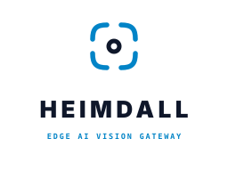

工业级官方双主题 · 暗色与亮色全套系交付
Heimdall 亮色与暗色全套品牌视觉体系
针对边缘 AI 监控大屏（7×24h 暗夜低疲劳环境）与白天明亮办公室/白底 PDF 导出审查场景，为你量身设计了色彩严格对标 WCAG AAA 高对比度的【暗色套件】与【亮色套件】。SVG Favicon 更内置原生媒体查询，无论操作系统处于何种主题，均自动切换最佳视效。
01. 暗色套件 (Dark Mode Suite)
专为监控大屏、暗色模式 Web/Desktop 控制台定制
HORIZONTAL LOGO
web/public/logo-horizontal-dark.svg
角标: #00F0FF
字标: #FFFFFF
副标: #00F0FF
指示灯: #10B981
STACKED HERO

logo-stacked-dark.svg
FAVICON DARK
16/32/64px
favicon-dark.svg
暗色顶栏实装效果 (Dark Navbar Simulation)
ANE 14.2ms
02. 亮色套件 (Light Mode Suite)
专为白天明亮控制台、PDF 安全审查报表、白色纸质打印定制
HORIZONTAL LOGO (LIGHT)
web/public/logo-horizontal-light.svg
角标: #0284C7
字标: #0F172A
副标: #0284C7
指示灯: #059669
STACKED HERO (LIGHT)

logo-stacked-light.svg
FAVICON LIGHT
16/32/64px
favicon-light.svg
亮色顶栏实装效果 (Light Navbar Simulation)
ANE 14.2ms
03. Chrome 标签栏跨系统主题实测
由于 favicon.svg 内部注入了 @media (prefers-color-scheme)，浏览器会随操作系统自动切色
当操作系统处于【暗色主题】时的标签页：
当操作系统处于【浅色主题】时的标签页：